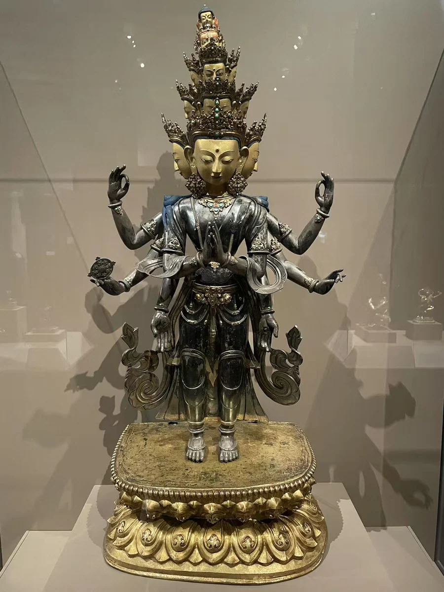
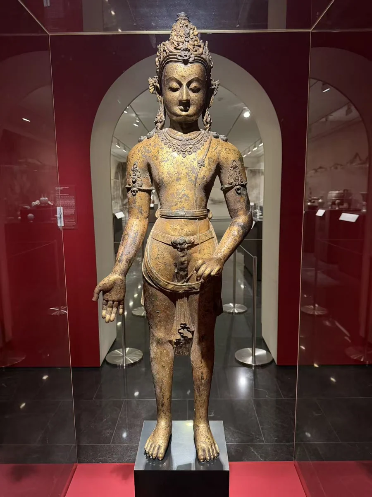

十一面观音：像内的经卷
沃尔特斯艺术博物馆
21 / CLOSE LOOKING

观音的金属身体既有可见的外表，也有容纳经卷与供物的内部。沃尔特斯馆方介绍，背部开口可供装藏，开眼仪式则参与了造像成为礼拜对象的过程。另一尊十一面观音的展签记载像内藏有经卷。这些内部信息，使正面照片中的冠饰、莲花与双手，通向更完整的供养实践。虚舟宝冠佛的检测研究，则带出铸造、破损与修复的另一种内部历史。 [23]
细看：外部镶嵌与中空身体；展签记录的经卷、装藏；射线说明与后补双手。
沃尔特斯艺术博物馆

虚舟收藏（The Xuzhou Collection of Buddhist Art） · 在休斯顿美术馆展出
图片按各自比例展示，实物不等大。

银、鎏金银与鎏金铜

鎏金铜
作品基本资料据现场展签及下列馆方记录整理；文字中的观看描述基于这里的现场照片。